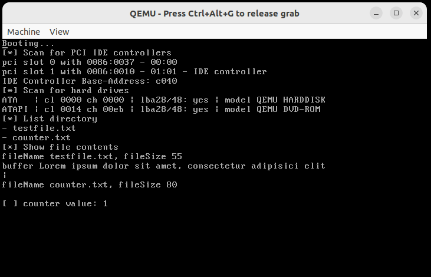
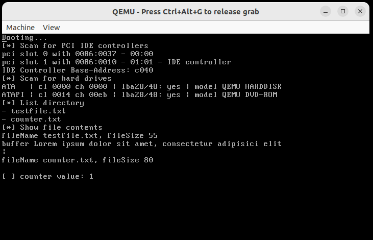

What
What we are trying to achieve
In the previous posts we compiled a i686-elf cross-compiler, built a simple bootloader and kernel, wrote text on screen and received input from the keyboard. Now I’d like to implement persistent storage. That will enable us to read and write data to the hard disk.
What to expect
At the end of this part of the series we will be able to read and write data to and from a hard disk image.
To demonstrate this I’ve implemented a simple counter that reads a value from the hard disk, increments it and writes it back to the hard disk.
You can see the “counter value” being incremented every time the CustomOS has booted.
 

When
Hard Disk is the fourth point on this projects roadmap. This part of the series is a bit more involved. Instead of mentioning all required code here, I’ll be sharing the code on GitHub.
Why
Combined with the features we already have we will have all prerequisites to be able to write a useful application like a simple text editor. This is also required for writing/reading, compiling and executing source code from within our OS.
Background
Traditionally, in early computers, data storage was no more than a tape. This tape could be forwarded and rewound to any position by an address. Then a block of data that was currently under the reading/writing head could be read or written.
Accessing a hard disk is not much different than accessing such a tape. We provide the address of the block of data we want to read and then retrieve that block of data.
File Systems
Now computer filesystems have directory structures and files. This is achieved by keeping a table of contents, much like in a book, that points to addresses where the data resides.
How this table of contents is set up depends on a the file system that is used. One simple file system that dates back to ‘77 is FAT (File Allocation Table), the successor FAT32 (supports 32-bit addressing for larger volumes) is still supported on most modern systems.
File systems have improved a lot since the early days. Modern file systems such as EXT2, EXT3 or EXT4, NTFS and ZFS have added numerous advanced features to prevent data corruption. As we’re not aiming for a perfect or even production ready OS, we will throw most of the advanced features overboard and go with a simple FAT file system.
Implementation Options
Starting out I thought I’d use the BIOS-Interrupt 0x13 to keep things simple. It tells the BIOS to load a sector of data from the hard disk. Unfortunately that BIOS-Interrupt is not well supported and doesn’t work in protected mode.
Instead I chose to start off with a ramdisk loaded by GRUB and then transition to hard disk thereby implementing a basic control code for the “Peripheral Component Interconnect” (PCI) controller and the “Integrated Drive Electronics” (IDE) controller, as seen below.
Addressing
In order to tell the reading/writing head where to seek to we need an addressing mode. For Floppy Disk drives CHS (Cylinder, Head, Sector) is used - essentially a 3-digit number - that is sufficient for very small file systems. “Logical Block Array” (LBA) that we will use below can be used to address blocks on much larger hard disks.
Steps
Enabling hard disk I/O can become complicated very fast. I’ve simplified the code to the bare minimum.
To start out it makes sense to implement simple read-only ramdisk support.
For the ramdisk to work we will need:
- a fat32 formated disk image
- modifications to the Grub configuration to load the file into memory on boot
- modifications to the kernel.ld linker script to remap the kernel to free space for the ramdisk
- code to compute the address offset to read and write data
- the FatFS library and implementations against its interface to allow reading and writing to files
- some additional common functions and a printf/sprintf implementation to easily manipulate strings
We can then move on to real hard disk support. For this we will need:
- the same fat32 formated disk image
- altered QEMU parameters to mount the disk image as a hard disk
- query code for the “Peripheral Component Interconnect” (PCI) bus to find the first “Integrated Drive Electronics” (IDE) controller
- query code for the IDE controller to find the first IDE hard drive.
- more complex interface implementations for the FatFS library to seek and read and write from/to the IDE hard disk
How
Ramdisk
By modifying the boot assembly code to support multiboot we can load a ramdisk. For this I was lucky to find some working code on GitHub [1] for inspiration.
menuentry "MyOS" {
multiboot /boot/myos.bin
module /boot/disk.fat
set gfxpayload=text
}Additionally we need to modify the linked.ld to offset by 0xC0000000.
In the code we need to offset by this value to load the ramdisk.
void ramdiskInit(struct multiboot_info* info) {
uint32_t mod_count = info->mods_count;
if(mod_count == 0) {
printf("RamDisk Module not loaded\n");
}
uint32_t mod0 = *(uint32_t*) (info->mods_addr);
uint32_t mod1 = *(uint32_t*) (info->mods_addr + 4);
uint32_t size = mod1 - mod0;
_loadRamdisk(mod0 + 0xC0000000, size);
}If the disk.fat disk image is created to be Fat32 we can use the “fatfs” library that is also very commonly used on Arduinos to read and write to SD-cards.
For this we need to implement the FatFS functions
DSTATUS disk_initialize(__attribute__((unused)) BYTE pdrv)
DSTATUS disk_status(__attribute__((unused)) BYTE pdrv)
DRESULT disk_read(__attribute__((unused)) BYTE pdrv, BYTE* buffer, DWORD sector, UINT count)
DRESULT disk_ioctl(__attribute__((unused)) BYTE pdrv, BYTE cmd, void* buff)Within the disk_read function is merely a memcpy to retrieve the data at a given address offset, because the Grub bootloader has already copied the ramdisk into memory for us to use.
memcpy(buffer, (uint8_t*) (ramdisk.location + offset), size);FatFS implements the common C file reading and writing functions. From here on we can use f_open and f_read to read files from the ramdisk.
res = f_open(&file, fileName, FA_READ);res = f_read(&file, &buffer, fileSize, &br);Hard Disk
At this point we know we can create a compatible hard disk image and read from it with FatFS library.
In order to mount that same disk image as a hard disk we need to modify our start up script for the QEMU-Emulator.
qemu-system-i386 \
-drive file=disk.fat,format=raw \
-drive file=myos.iso,index=2,media=cdrom -boot dThis will mount the disk.fat image as an IDE hard drive.
At this point the programming gets involved. We need to write an ATA/ATAPI driver.
The code I’ve written in ata.h follows the following steps:
read a data word from the Peripheral Component Interconnect (PCI) Interface"] --> B["getFirstIdeControllerBaseAddress()
use diskPciReadWord() to iterate over all connected PCI devices.
Get the BaseAddress of the first Integrated Drive Electronics (IDE) controller found"] B --> C["getFirstHardDiskBaseAddress(ideControllerBaseAddress)
with the IDE controller base address, iterate over all connected IDE devices,
get the drive information to distinguish drive types and find the first hard disk."] C --> D["FatFS functions
Similarly to the ramdisk implementation we can implement the FatFs functions disk_initialize, disk_status, seek, disk_read, disk_write"] D --> E["idePortWrite() & read
these functions in turn use 'outportb' and 'inportb' to send and receive bytes to/from the IDE controller control registers.
We seek (=move the read/write head of the hard disk to a position) by Logical Block Addressing (LBA).
We read words by the assembly 'insw' command and write words using the assembly 'outsw' command"]
Note: I’ve tried to keep the code compact, but for more efficient hard disk I/O you would want to control and fine-tune “Direct Memory Access” (DMA) to offload work from the CPU.
Progress
At this point we can write text on the screen, read input from the keyboard and load and store data from the hard disk. With this we can write useful applications like basic text editors.
In future we could:
- add dynamic memory allocation (malloc)
- enable executing program code/scripts in the CustomOS
- by interpretation or compilation (e.g. using the Tiny-C-Compiler (TinyCC))
- implement a text editor
- and use it to extend functionality by programming from within the CustomOS
- add graphics e.g by BIOS Mode 12h for 16 color 640x480 VGA graphics
1] https://github.com/sk-io/os